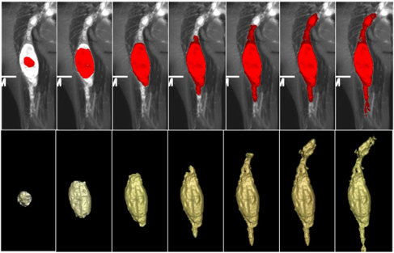
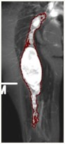
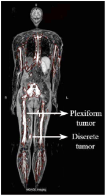
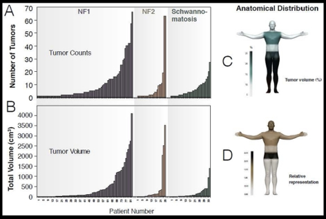

Neurofibromatosis (NF)
Neurofibromatoses (NFs), including NF1, NF2, and schwannomatosis, are a group of autosomal-dominant neurogenetic disorders characterized by a predisposition in virtually 100% of patients to develop multiple nerve sheath tumors. Magnetic resonance imaging (MRI), in particular short term inversion recovery (STIR) sequence, is the common imaging modality to determine volumetric tumor burden in NF patients. We have developed a series of volumetric imaging analysis tools for quantification of NF tumor burden in the longitudinal monitoring and assessment of tumor response.
Semi-automated NF1 Segmentation: Dynamic-thresholding (DT) Level Set
We developed the dynamic-thresholding (DT) level set by implementing the propagating shell, which is a thick 3D region encompassing the level set front. This propagating shell is pushed or pulled toward the boundary of a tumor by a designed dynamic-thresholding speed function to balance the tumor region and background in a histogram. The shell reaches the convergence position where the inner half shell is located inside the tumor and the outer half is located in the background, at which the threshold shift is minimized and the threshold becomes stable.
|  |  |  |
Deep parametric active contours (DPAC) for NF segmentation
We proposed a novel end-to-end framework, Deep Parametric Active Contours (DPAC), that integrates the Active Contour Models (ACMs) with the robust nonlinear priori feature extraction abilities of the Convolutional Neural Networks (CNN).
- Add a new force term into the ACM.
- Predict the local parameter maps into the ACM.
- Apply deep-learning to neurofibromatosis segmentation.
Random-Walk for NF segmentation
[under construction]Volumetric Tumor Analysis for Quantification of Whole-body Tumor Burden on WBMRI
In the DoD NF clinical study (PI: Scott R. Plotkin), “Whole-body MRI evaluation of subjects with NF1, NF2, and schwannomatosis”, we quantified NF tumor burden on whole-body MRI images using our computerized quantification technique. We recruited 247 patients who underwent whole-body MRI, including 141 NF1 patients (57%), 55 NF2 patients (22%), and 51 schwannomatosis patients (21%). In this cohort, we identified a total of 1286 nerve sheath tumors (528 plexiform and 758 discrete tumors) in 145/247 patients (59%).
|  |  |
Plasma S100β is not a useful biomarker for tumor burden in neurofibromatosis
We calculated whole-body tumor burden in subjects with NF1, NF2, and schwannomatosis using whole-body MRI (WBMRI) and measured the concentration of S100β in plasma using ELISA. There was no relationship between the presence of internal tumors and the presence of detectable S100β in blood for the overall group or for individual diagnoses (p>0.05 by chi-square for all comparisons).
Benign whole body tumor volume is a risk factor for malignant peripheral nerve sheath tumors in neurofibromatosis type 1
We compared the tumor volumes on whole-body MRI STIR images between 31 NF1 patients with MPNSTs and 62 age- and sex-matched NF1 patients, who did not have MPNSTs. The median total number of benign tumors and the median whole-body internal tumor volume were 2.0 and 352.0 cc respectively among the NF1 MPNST group, and were 1.0 and 3.8 cc respectively in the NF1 comparison group (p < 0.001). The study revealed that higher numbers of plexiform tumors, larger whole-body internal tumor volume, and younger age are important risk factors for MPNST.